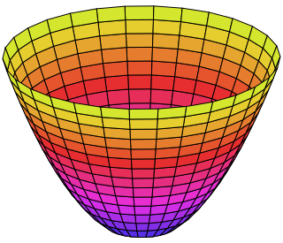

Advanced Machine Learning
06: regression and PCA
Schedule
| # | date | topic | description |
|---|---|---|---|
| 1 | 22-Aug-2022 | Introduction | |
| 2 | 24-Aug-2022 | Foundations of learning | |
| 3 | 29-Aug-2022 | PAC learnability | |
| 4 | 31-Aug-2022 | Linear algebra (recap) | hw1 released |
| 05-Sep-2022 | Holiday | ||
| 5 | 07-Sep-2022 | Linear learning models | |
| 6 | 12-Sep-2022 | Principal Component Analysis | project ideas |
| 7 | 14-Sep-2022 | Curse of Dimensionality | hw1 due |
| 8 | 19-Sep-2022 | Bayesian Decision Theory | hw2 release |
| 9 | 21-Sep-2022 | Parameter estimation: MLE | |
| 10 | 26-Sep-2022 | Parameter estimation: MAP & NB | finalize teams |
| 11 | 28-Sep-2022 | Logistic Regression | |
| 12 | 03-Oct-2022 | Kernel Density Estimation | |
| 13 | 05-Oct-2022 | Support Vector Machines | hw3, hw2 due |
| 10-Oct-2022 | * Mid-point projects checkpoint | * | |
| 12-Oct-2022 | * Midterm: Semester Midpoint | exam | |
| 14 | 17-Oct-2022 | Matrix Factorization | |
| 15 | 19-Oct-2022 | Stochastic Gradient Descent |
| # | date | topic | description |
|---|---|---|---|
| 16 | 24-Oct-2022 | k-means clustering | |
| 17 | 26-Oct-2022 | Expectation Maximization | hw4, hw3 due |
| 18 | 31-Oct-2022 | Automatic Differentiation | |
| 19 | 02-Nov-2022 | Nonlinear embedding approaches | |
| 20 | 07-Nov-2022 | Model comparison I | |
| 21 | 09-Nov-2022 | Model comparison II | hw5, hw4 due |
| 22 | 14-Nov-2022 | Model Calibration | |
| 23 | 16-Nov-2022 | Convolutional Neural Networks | |
| 21-Nov-2022 | Fall break | ||
| 23-Nov-2022 | Fall break | ||
| 24 | 28-Nov-2022 | Word Embedding | hw5 due |
| 30-Nov-2022 | Presentation and exam prep day | ||
| 02-Dec-2022 | * Project Final Presentations | * | |
| 07-Dec-2022 | * Project Final Presentations | * | |
| 12-Dec-2022 | * Final Exam | * | |
| 15-Dec-2022 | Grades due |
Outline for the lecture
- Linear Regression
- Linear Algebra Refresher
- Spectral Theorem
- Principal Component Analysis
- Dimensionality Reduction Demo

Francis Galton

Carl Friedrich Gauss
Linear regression

Adrien-Marie Legendre
Least Mean Squares

Linear Regression
$f(\vec{w}) = \frac{1}{n} \sum_{i}^{n} (\vec{w}^T\vec{x}_i - y_i)^2$
Let us write in matrix form:
$f(\vec{w}) =\frac{1}{n}(\bf{X}\vec{w} - \vec{y})^T(\bf{X}\vec{w} - \vec{y})$
$f(\vec{w}) =\frac{1}{n}(\bf{X}\vec{w} - \vec{y})^T(\bf{X}\vec{w} - \vec{y})$
Expanding:
$f(\vec{w}) =\frac{1}{n}(\vec{w}^T\bf{X}^T\bf{X}\vec{w} - 2\vec{w}^T\bf{X}^T\vec{y} + \vec{y}^T\vec{y})$
$f(\vec{w}) =\frac{1}{n}(\vec{w}^T\bf{X}^T\bf{X}\vec{w} - 2\vec{w}^T\bf{X}^T\vec{y} + \vec{y}^T\vec{y})$
Dropping $\vec{y}$:
$f(\vec{w}) =\frac{1}{n}(\vec{w}^T\bf{X}^T\bf{X}\vec{w} - 2\vec{w}^T\bf{X}^T\vec{y})$
$f(\vec{w}) =\frac{1}{n}(\vec{w}^T\bf{X}^T\bf{X}\vec{w} - 2\vec{w}^T\bf{X}^T\vec{y})$
Using:
$\frac{\partial \vec{x}^T\bf{B}\vec{x}}{\partial \vec{x}} = (\bf{B} + \bf{B}^T)\vec{x}$
$\frac{\partial f(\vec{w})}{\partial \vec{w}} =\frac{2}{n}(\bf{X}^T\bf{X}\vec{w} - \bf{X}^T\vec{y})$
$\frac{\partial \vec{x}^T\bf{B}\vec{x}}{\partial \vec{x}} = (\bf{B} + \bf{B}^T)\vec{x}$
$\frac{\partial f(\vec{w})}{\partial \vec{w}} =\frac{2}{n}(\bf{X}^T\bf{X}\vec{w} - \bf{X}^T\vec{y})$
Minimizing LMS
$\frac{\partial f(\vec{w})}{\partial \vec{w}} =\frac{2}{n}(\bf{X}^T\bf{X}\vec{w} - \bf{X}^T\vec{y})$
$\frac{\partial f(\vec{w})}{\partial \vec{w}} = 0 $
$\bf{X}^T\bf{X}\vec{w} - \bf{X}^T\vec{y} = 0$
$\bf{X}^T\bf{X}\vec{w} = \bf{X}^T\vec{y}$
$\vec{w} = (\bf{X}^T\bf{X})^{-1}\bf{X}^T\vec{y}$
$\bf{X}^T\bf{X}\vec{w} = \bf{X}^T\vec{y}$
$\vec{w} = (\bf{X}^T\bf{X})^{-1}\bf{X}^T\vec{y}$
$\bf{X}^{\dagger} = (\bf{X}^T\bf{X})^{-1}\bf{X}^T$ - pseudoinverse
$\bf{X}^{\dagger} = \lim_{\epsilon \to 0}(\bf{X}^T\bf{X} + \epsilon\bf{I})^{-1}\bf{X}^T$ - always exists
Least Mean Squares regression
Least Mean Squares single sample

Fitting data: which is correct?

Everyone believes in the Gaussian law of errors. The experimentalists think it is a mathematical theorem, and the mathematicians think it is an established experimental fact.
-Henri Poincaré
Different ways to fit a line


Linear Algebra Refresher
Inner product
Let ${\bf x} = \left[\begin{array}{ccc}1 & 2 & 3\end{array}\right]^{\rm T}$. The inner product of ${\bf x}$ with itself, or ${\bf x}^{T}{\bf x}$ is a scalar: $$ \left[ \begin{array}{ccc} 1 & 2 & 3 \end{array} \right] \left[ \begin{array}{c} 1\\ 2\\ 3 \end{array} \right] = 1 \cdot 1 + 2 \cdot 2 + 3 \cdot 3 = 14. $$Outer product
The outer product of $\bf{x}$ with itself, or ${\bf x}{\bf x}^{\;{\rm T}}$ is a matrix: \[ \left[ \begin{array}{c} 1\\ 2\\ 3 \end{array} \right] \left[ \begin{array}{ccc} 1 & 2 & 3 \end{array} \right] = \left[ \begin{array}{ccc} 1 & 2 & 3\\ 2 & 4 & 6\\ 3 & 6 & 9 \end{array} \right] \]which was obtained as
\[ \left[ \begin{array}{c} 1\\ 2\\ 3 \end{array} \right] \left[ \begin{array}{ccc} 1 & 2 & 3 \end{array} \right] = \left[ \begin{array}{c|c|c} 1\left[ \begin{array}{c} 1\\ 2\\ 3 \end{array} \right]& 2\left[ \begin{array}{c} 1\\ 2\\ 3 \end{array} \right]& 3\left[ \begin{array}{c} 1\\ 2\\ 3 \end{array} \right] \end{array} \right]. \]
Spectral Theorem
Change of basis
Consider a linear transform, ${\bf P}_{\cal B}$, and its inverse, ${\bf P}^{-1}_{\cal B}$, which map a vector back and forth between its representation in the standard basis and its representation in the basis, ${\cal B}$$$ \begin{array}{ccc} & {\bf P}_{\cal B} & \\ \vec{u} & \stackrel{\longrightarrow}{\longleftarrow} & \left[\vec{u}\right]_{\cal B}\\ & {\bf P}^{-1}_{\cal B} & \end{array} $$
Which basis?
Let ${\cal B}$ consist of $N$ basis vectors, $\vec{b}_1 \dots \vec{b}_N$. Since $\left[{\bf u}\right]_{\cal B}$ is the representation of $\vec{u}$ in ${\cal B}$, it follows that\[ \vec{u} = \left(\left[\vec{u}\right]_{\cal B}\right)_1 \vec{b}_1 + \left(\left[\vec{u}\right]_{\cal B}\right)_2 \vec{b}_2 + \dots \left(\left[\vec{u}\right]_{\cal B}\right)_N \vec{b}_N. \]
But that's a projection
\[ \vec{u} = \left(\left[\vec{u}\right]_{\cal B}\right)_1 \vec{b}_1 + \left(\left[\vec{u}\right]_{\cal B}\right)_2 \vec{b}_2 + \dots \left(\left[\vec{u}\right]_{\cal B}\right)_N \vec{b}_N \]But this is just the matrix vector product $\vec{u} = {\bf B}\left[\vec{u}\right]_{\cal B}$
\[
{\bf B} = \left[\begin{array}{c|c|c|c}{\bf b}_1 & {\bf b}_2 & \dots & {\bf b}_N\end{array}\right]
\]
$$
\begin{array}{ccc}
& {\bf P}_{\cal B} & \\
\vec{u} & \stackrel{\longrightarrow}{\longleftarrow} & \left[\vec{u}\right]_{\cal B}\\
& {\bf P}^{-1}_{\cal B} &
\end{array}
$$
We see that
\[ \begin{array}{lcl } {\bf P}_{\cal B} &=& {\bf B}^{-1}\\ {\bf P}^{-1}_{\cal B} &=& {\bf B} \end{array} \]
Similarity Transforms
Consider a linear transformation represented in the standard basis by the matrix ${\bf A}$. We seek $\left[{\bf A}\right]_{\cal B}$, i.e., the representation of the corresponding linear transformation in the basis ${\cal B}$
\[
\begin{array}{ccc}
\vec{u} & \stackrel{{\bf A}}{\longrightarrow} & {\bf A}\vec{u}\\
\uparrow {\bf B} & & \downarrow {\bf B}^{-1}\\
\left[\vec{u}\right]_{\cal B} & \stackrel{\left[{\bf A}\right]_{\cal B}\;\;\;}{\longrightarrow} &
\left[{\bf A}\vec{u}\right]_{\cal B}
\end{array}
\]
Similarity Transforms
\[
\begin{array}{ccc}
\vec{u} & \stackrel{{\bf A}}{\longrightarrow} & {\bf A}\vec{u}\\
\uparrow {\bf B} & & \downarrow {\bf B}^{-1}\\
\left[\vec{u}\right]_{\cal B} & \stackrel{\left[{\bf A}\right]_{\cal B}\;\;\;}{\longrightarrow} &
\left[{\bf A}\vec{u}\right]_{\cal B}
\end{array}
\]
The matrix we seek maps $\left[{\bf u}\right]_{\cal B}$ into $\left[{\bf A}{\bf u}\right]_{\cal B}$.
\[
\left[{\bf A}\right]_{\cal B} = {\bf B}^{-1}{\bf A}{\bf B}.
\]
${\bf A}$ and $\left[{\bf A}\right]_{\cal B}$
are related by a similarity transform.
Basis of eigenvectors
Let ${\bf A}$ be a representation of a transform in the standard basis and let the columns of ${\bf X}$ be the eigenvectors of ${\bf A}$ (symmetric). Then ${\bf X}$ and ${\bf X}^{\rm T}={\bf X}^{-1}$ take us back and forth between the standard basis and ${\cal X}$:\[ \begin{array}{ccc} & {\bf X}^{\rm T} & \\ {\bf u} & \stackrel{\longrightarrow}{\longleftarrow} & \left[{\bf u}\right]_{\cal X}\\ & {\bf X} & \end{array} \]
Diagonalization of Symmetric Matrices
The matrix we seek maps $\left[{\bf u}\right]_{\cal X}$ into $\left[{\bf A}{\bf u}\right]_{\cal X}$:\[ \begin{array}{ccc} {\bf u} & \stackrel{{\bf A}}{\longrightarrow} & {\bf A}{\bf u}\\ \uparrow {\bf X} & & \downarrow {\bf X}^{\rm T}\\ \left[{\bf u}\right]_{\cal X} & \stackrel{\left[{\bf A}\right]_{\cal X}\;\;\;}{\longrightarrow} & \left[{\bf A}{\bf u}\right]_{\cal X} \end{array} \]
which is (from the diagram):
\[
\Lambda = {\bf X}^{\rm T}{\bf A}{\bf X}.
\]
Note, $\Lambda$ is diagonal with $\Lambda_{ii}=\lambda_i$
Spectral Theorem for Symmetric Matrices
Any symmetric $N \times N$ matrix, ${\bf A}$, with $N$ distinct eigenvalues, can be factored as follows: \[ {\bf A} = {\bf X} \Lambda {\bf X}^{\rm T} \] where $\Lambda$ is $N \times N$ and diagonal, ${\bf X}$ and ${\bf X}^{\rm T}$ are $N \times N$ matrices, and the $i$-th column of ${\bf X}$ (equal to the $i$-th row of ${\bf X}^{\rm T}$) is an eigenvector of ${\bf A}$: \[ \lambda_i {\bf x}_i = {\bf A}{\bf x}_i \] with eigenvalue $\Lambda_{ii} = \lambda_i$.
Spectral Theorem (note)
Note that ${\bf x}_i$ is orthogonal to ${\bf x}_j$ when $i \neq j$: \[ \left({\bf X}{\bf X}^{\rm T}\right)_{ij} = \delta_{ij} = \left\{\begin{array}{ll}1 & {\rm if}\;\;i=j\\ 0 & {\rm otherwise.}\end{array} \right. \] In other words, ${\bf X}{\bf X}^{\rm T} = {\bf I}$. Consequently, \[ {\bf X}^{\rm T} = {\bf X}^{-1} \]
Spectral Theorem (cont.)
Let's rewrite ${\bf A} = {\bf X} \Lambda {\bf X}^{\rm T}$ using the definition of matrix product and the fact that $\Lambda$ is diagonal:\begin{eqnarray*} \left({\bf A}\right)_{ij} & = & \sum_{k=1}^N \left({\bf X}\right)_{ik} \Lambda_{kk} \left({\bf X}^{\rm T}\right)_{kj} \end{eqnarray*}
Spectral Theorem (cont.)
Since ${\bf X} = \left[\begin{array}{c|c|c|c} {\bf x}_1 & {\bf x}_2 & \cdots & {\bf x}_N\end{array}\right]$ and $\Lambda_{kk} = \lambda_k$
\begin{eqnarray*}
\left({\bf A}\right)_{ij} & = & \sum_{k=1}^N \left({\bf X}\right)_{ik} \Lambda_{kk} \left({\bf X}^{\rm T}\right)_{kj}
\end{eqnarray*}
\begin{eqnarray*}
\left({\bf A}\right)_{ij} & = & \sum_{k=1}^N \left({\bf x}_k\right)_i \lambda_k \left({\bf x}_k\right)_j
= \sum_{k=1}^N \left(\lambda_k {\bf x}_k {\bf x}_k^{\rm T}\right)_{ij}
\end{eqnarray*}
\begin{eqnarray*}
{\bf A} & = & \sum_{k=1}^N \lambda_k {\bf x}_k {\bf x}_k^{\rm T},\text{ where } \lambda_k {\bf x}_k = {\bf A}{\bf x}_k
\end{eqnarray*}
Spectral Theorem (cont.)
The spectral factorization of ${\bf A}$ is:
\[
{\bf A} = \lambda_1 \vec{x}_1 \vec{x}^{\rm T}_1 +
\lambda_2 \vec{x}_2 \vec{x}^{\rm T}_2 + \dots +
\lambda_N \vec{x}_N \vec{x}^{\rm T}_N.
\]
Note, each $\lambda_n {\bf x}_n {\bf x}^{\rm T}_n$
is a rank one matrix
Let ${\bf A}_i = \lambda_i \vec{x}_i \vec{x}^{\rm T}_i$. Now, because $\vec{x}^{\rm T}_i \vec{x}_i = 1$:
\begin{eqnarray*}
\lambda_i \vec{x}_i & = & \left(\lambda_i \vec{x}_i \vec{x}^{\rm T}_i \right)\vec{x}_i\\
& = & {\bf A}_i \vec{x}_i
\end{eqnarray*}
i.e., $\vec{x}_i$ is the only eigenvector of ${\bf A}_i$ and its only eigenvalue is $\lambda_i$.
Principal Component Analysis
Quadratic forms
Let $f({\bf x}) = {\bf x}^{\;{\rm T}}{\bf A}{\bf x}$ where
${\bf A}={\bf A}^{\rm T}$. In two-dimensions, we have
\[
{\bf A} = \left[\begin{array}{cc}
a & b\\
b & c
\end{array}\right]\;\;\;{\rm and}\;\;\;
{\bf x} = \left[\begin{array}{cc}x & y\end{array}\right]^{\rm T}
\]
\[
{\bf A}{\bf x} =
\left[\begin{array}{cc}
a & b\\
b & c
\end{array}\right]
\left[\begin{array}{c}
x\\
y
\end{array}\right]
=
\left[\begin{array}{c}
a x + b y\\
b x + c y
\end{array}\right]
\]
\[
{\bf x}^{\;{\rm T}}{\bf A}{\bf x} =
\left[\begin{array}{cc}
x & y
\end{array}\right]
\left[\begin{array}{c}
a x + b y\\
b x + c y
\end{array}\right]
= a x^2 + 2 b x y + c y^2.
\]

Quadratic forms
When ${\bf A}$ is positive definite, then \[ f({\bf x}) = {\bf x}^{\;{\rm T}}{\bf A}{\bf x} \] is a paraboloid and the level curves, \[ {\bf x}^{\;{\rm T}}{\bf A}{\bf x} = k \] are ellipses. A matrix is positive definite iff all of its eigenvalues are positive.example
Let ${\bf A}=\left[\begin{array}{cc}5 & -2\\ -2 & 5\end{array}\right]$. Then
${\bf x}^{\;{\rm T}}A{\bf x}$ equals
\[
5 x^2 - 4xy + 5y^2
\]

Multivariate Gaussian Density
\[ G({\bf x}) = \frac{1}{(2\pi)^{K/2} |{\bf C}|^{1/2}} e^{-\frac{1}{2}{\bf x}^{\;{\rm T}} {\bf C}^{-1} {\bf x}} \]
$K$ is the number of dimensions and ${\bf C}$ is the $K
\times K$ covariance matrix.
In the bivariate case
\[
{\bf C} =
\left[
\begin{array}{cc}
\sigma_{xx} & \sigma_{xy}\\
\sigma_{xy} & \sigma_{yy}
\end{array}
\right]
\]
Note: If ${\bf C}$ is symmetric and positive definite, then
${\bf C}^{-1}$ is also symmetric and positive definite.
Covariance Matrix
An $N \times K$ matrix, $X$, where the $n$-th row is the $n$-th sample of a Gaussian distributed vector random variable, ${\bf x} = \left[x, y\right]^T$For example, when $K=2$: \[ {\bf X} = \left[ \begin{array}{cc} x_1 & y_1\\ x_2 & y_2\\ \vdots & \vdots\\ x_N & y_N \end{array} \right] \]
Covariance Matrix
The sample mean of the $N$ samples is \[ {\bf \mu} = \frac{1}{N}\sum_{n=1}^N {\bf x}_n. \] We will assume that ${\bf \mu} = \left[0, 0 \right]^{T}$. If this is false, we can always make it true by subtracting ${\bf \mu}$ from each of the samples prior to constructing ${\bf X}$.Covariance Matrix
Observe that
\begin{eqnarray*}
{\bf X}^{\rm T} {\bf X} & = &
\sum_{n=1}^N {\bf x}_n {\bf x}_n^{\;{\rm T}}
=
\left[
\begin{array}{cc}
x_1 x_1 & x_1 y_1\\
x_1 y_1 & y_1 y_1
\end{array}
\right]
+
\cdots
+
\left[
\begin{array}{cc}
x_N x_N & x_N y_N\\
x_N y_N & y_N y_N
\end{array}
\right]
\end{eqnarray*}
Consequently
$$
\frac{1}{N}{\bf X}^{\rm T} {\bf X} =
\left[
\begin{array}{cc}
\langle xx\rangle & \langle xy\rangle\\
\langle xy\rangle & \langle yy\rangle
\end{array}
\right]
=
\left[
\begin{array}{cc}
\sigma_{xx} & \sigma_{xy}\\
\sigma_{xy} & \sigma_{yy}
\end{array}
\right]
$$
where $\langle\cdot\rangle$ denotes expected value.
Isodensity Surfaces
The level surfaces of the multivariate Gaussian distribution, $G({\bf x})$, consist of those points where $G({\bf x})$ has constant value:\[ G({\bf x}) = \frac{1}{(2\pi)^{K/2} |{\bf C}|^{1/2}} e^{-\frac{1}{2}{\bf x}^{\;{\rm T}} {\bf C}^{-1} {\bf x}} = P \]
It follows that the level surfaces are ellipsoids:
\[
{\bf x}^{\;{\rm T}} {\bf C}^{-1} {\bf x} = -2\ln
\left[(2\pi)^{K/2} |{\bf C}|^{1/2} P\right]
\]
Principal Axes
Principal Axes Theorem
The principal axes of the ellipsoids forming the level surfaces of the multivariate Gaussian distribution are given by the eigenvectors of its covariance matrix: \[ \lambda_k {\bf w}_k = {\bf C} {\bf w}_k \] where $|\lambda_1| > |\lambda_2| > \cdots |\lambda_K|$
Diagonalizing the Covariance Matrix
Because the covariance matrix, ${\bf C}$, is real, symmetric, and of full rank, it has $K$ orthogonal eigenvectors. It therefore can be diagonalized as follows: \[ {\bf C} = {\bf W}{\bf D}{\bf W}^{\rm T} \] where the $k$-th column of ${\bf W}$ is the eigenvector of ${\bf C}$ with the $k$-th largest eigenvalue and ${\bf D}$ is diagonal, with the corresponding eigenvalues on the diagonal: \[ D_{kk} = \lambda_k. \]The KL Transform
We can represent the samples of the Gaussian distributed vector random variable, ${\bf x}$, in the basis formed by the eigenvectors, ${\bf w}_k$, of its covariance matrix, ${\bf C}$. This change of basis is termed the Karhunen-Loeve or KL Transform: \[ {\bf u} = {\bf W}^{\rm T} {\bf x} \] where ${\bf u} =\left[u, v \right]^{\rm T}$ is the representation of ${\bf x} = \left[x, y\right]^{\rm T}$ in the basis formed by the ${\bf w}_k$.The KL Transform
Question What is the distribution of the ${\bf u}$?
Answer It is the multivariate Gaussian with covariance matrix, ${\bf D}$: \[ \hat{G}({\bf u}) = \frac{1}{(2\pi)^{K/2} |{\bf D}|^{1/2}} e^{-\frac{1}{2}{\bf u}^{\;{\rm T}} {\bf D}^{-1} {\bf u}}. \]
The Bivariate Case
\[
{\bf D} = {\bf W}^{\rm T}{\bf C}{\bf W} =
\left[\begin{array}{cc}
\sigma_{uu} & 0\\
0 & \sigma_{vv}
\end{array}\right]
\]
Since ${\bf D}$ is diagonal,
\[
|{\bf D}| = \sigma_{uu}\sigma_{vv}
\]
and ${\bf D}^{-1}$ has an especially simple form:
\[
{\bf D}^{-1} = \left[\begin{array}{cc}
1/\sigma_{uu} & 0\\
0 & 1/\sigma_{vv}
\end{array}\right]
\]
The Bivariate Case (cont.)
The Gaussian distribution with covariance $\left[\begin{array}{cc}
\sigma_{uu} & 0\\
0 & \sigma_{vv}
\end{array}\right]$ is:
\begin{eqnarray*}
\hat{G}(u,v) & = & \frac{1}{2\pi \sqrt{\sigma_{uu}\sigma_{vv}}}
e^{-\frac{1}{2}(\frac{u^2}{\sigma_{uu}}
+ \frac{v^2}{\sigma_{vv}})}
\end{eqnarray*}
Observe that $\hat{G}$ is separable:
\[
\hat{G}(u,v) =
\frac{1}{\sqrt{2\pi\sigma_{uu}}}e^{-\frac{u^2}{2\sigma_{uu}}}
\frac{1}{\sqrt{2\pi\sigma_{vv}}}e^{-\frac{v^2}{2\sigma_{vv}}}.
\]
Since the joint distribution of $u$ and $v$ can be expressed as the product of the distribution of $u$ and the distribution of $v$, we say that $u$ and $v$ are independent.
Knowing the value of $u$ tells you nothing about the value of $v$!